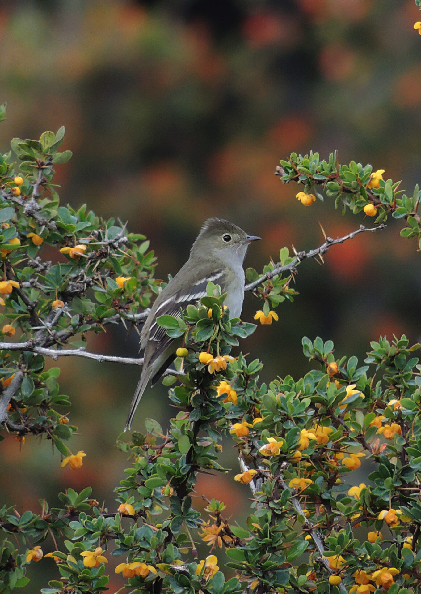

El fiofío crestiblanco (Elaenia albiceps) es una de las aves más abundantes y emblemáticas del cono sur de América. Pertenece al orden de los paseriformes —un término científico que significa literalmente «los que tienen forma de gorrión»— y forma parte de la familia Tyrannidae.
Aunque es un ave pequeña y a veces difícil de ver a simple vista porque le gusta andar escondida entre el follaje, su canto característico, un monosílabo algo triste que suena exactamente como un «fio-fio», lo delata de inmediato.
Tamaño reducido que lo hace difícil de divisar entre el follaje
A pesar de su ligereza, emprende migraciones de miles de kilómetros
Estado de conservación según la IUCN. Población estable y ampliamente distribuida
Es un ave de tamaño pequeño con un característico color gris ceniza con tintes oliváceos en su dorso. Lo más distintivo es su cabeza cenicienta con plumas alargadas en la corona que forman un pequeño copete, el cual esconde una mancha central blanquecina.
Su abdomen es blanquecino, y sus alas negruzcas muestran dos bandas transversales blancas muy notorias. Tanto el pico como las patas son de un color negruzco.
Esta combinación de colores apagados y silueta discreta es en realidad una ventaja evolutiva: el fiofío se mueve con confianza entre arbustos y copas de árboles sin llamar la atención de depredadores.
«Su voz, ese monosílabo algo triste que suena exactamente como un fio-fio, lo delata inmediatamente incluso cuando el ave permanece completamente invisible entre el follaje.»
Vocalización típica: el «fio-fio» que le da nombre
Variante del llamado — grabación alternativa en terreno
| Característica | Detalle |
|---|---|
| Nombre científico | Elaenia albiceps · Subespecie local: ssp. chilensis |
| Nombres locales | Fio-fio, chiflador, huiro, silbador, fiofio silbón (Arg), fiofio común (Bol), viudita chilena (Uru) |
| Tamaño y peso | Largo aproximado de 15 cm; peso entre 12 y 25 gramos |
| Estado de conservación | Preocupación Menor (LC) según la IUCN |

La clasificación del fiofío genera debate entre los expertos. Mientras que algunos organismos como la SACC lo mantienen clasificado como una subespecie (Elaenia albiceps chilensis), otros autores y plataformas especializadas —como Xeno-Canto y Zoonomen— proponen elevarlo al rango de especie independiente (Elaenia chilensis). La discusión continúa abierta en la comunidad ornitológica.
El fiofío es sumamente adaptable y habita en bosques, plantaciones, huertos y jardines, moviéndose desde zonas costeras hasta alturas que alcanzan los 2.000 metros sobre el nivel del mar. Su dieta es omnívora: se alimenta principalmente de insectos que atrapa al vuelo o entre las ramas, pero complementa su nutrición con semillas, bayas y brotes tiernos de árboles frutales.
A pesar de su pequeño tamaño, el fiofío es un migrante extraordinario. Su comportamiento varía completamente según la estación del año, cubriendo distancias que sorprenden para un ave que apenas supera los 20 gramos.
Representación simulada de la ruta migratoria del Fío-Fío en América del Sur. Realizado a partir de la fuente mencionada. Naranja: viaje de ida en otoño/invierno · Verde: viaje de vuelta en primavera/verano.
Fuente: Jara et al. (2024).
Llega en masa a Chile (desde Atacama hasta Tierra del Fuego) y a Argentina para reproducirse y nidificar.
Octubre → MarzoEmprende una gran travesía hacia el norte de Sudamérica, refugiándose en la cuenca amazónica de Perú y Brasil, llegando ocasionalmente hasta Colombia.
Abril → SeptiembreSu periodo de nidificación ocurre normalmente entre noviembre y enero. Construye un nido tipo taza utilizando pasto, musgo y líquenes, forrado con plumas o cardos.
Vocalización registrada durante la temporada reproductiva; permite apreciar variaciones en el canto según contexto.